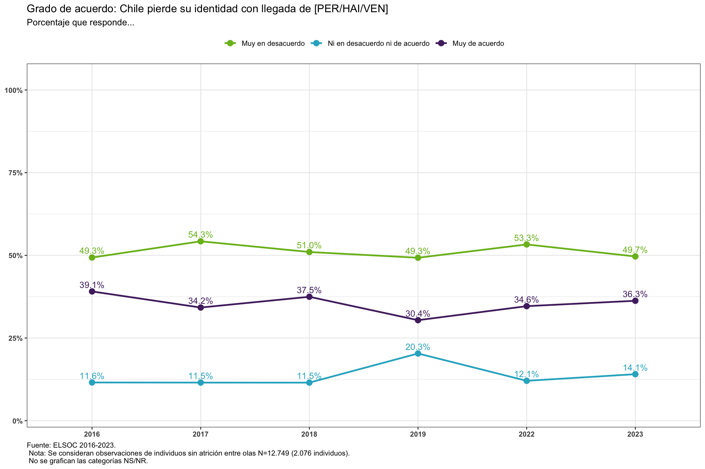
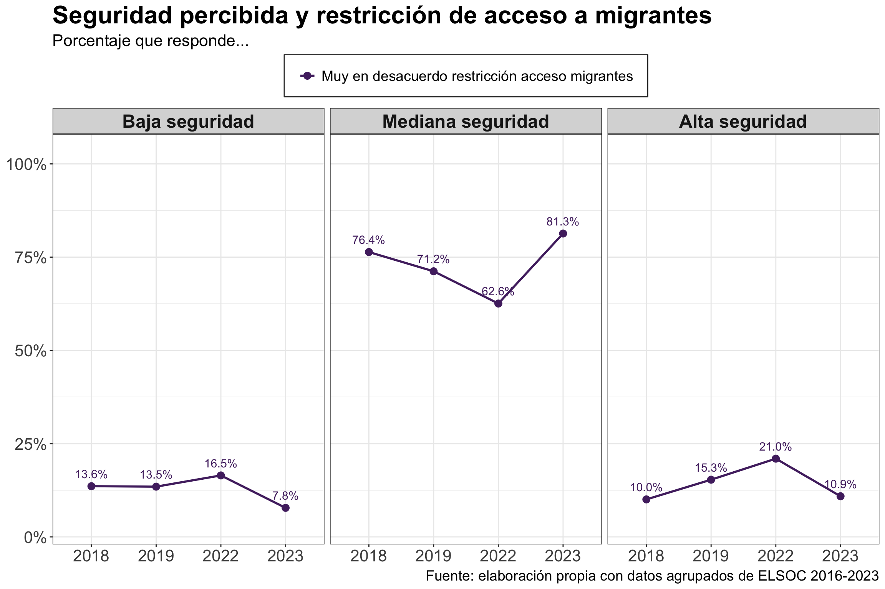
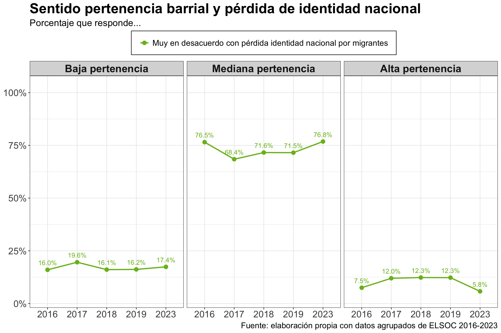
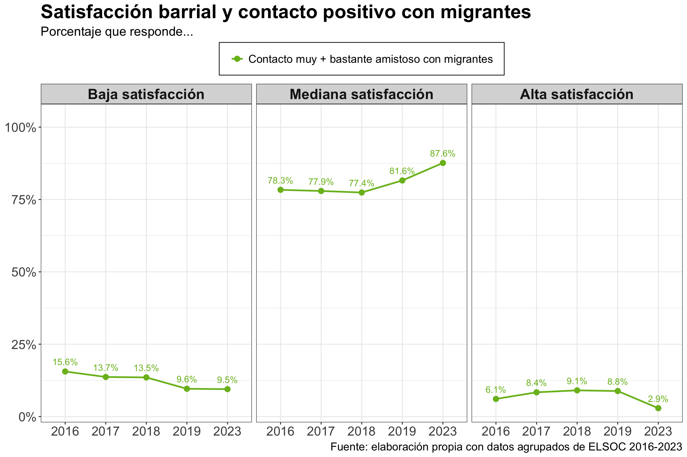
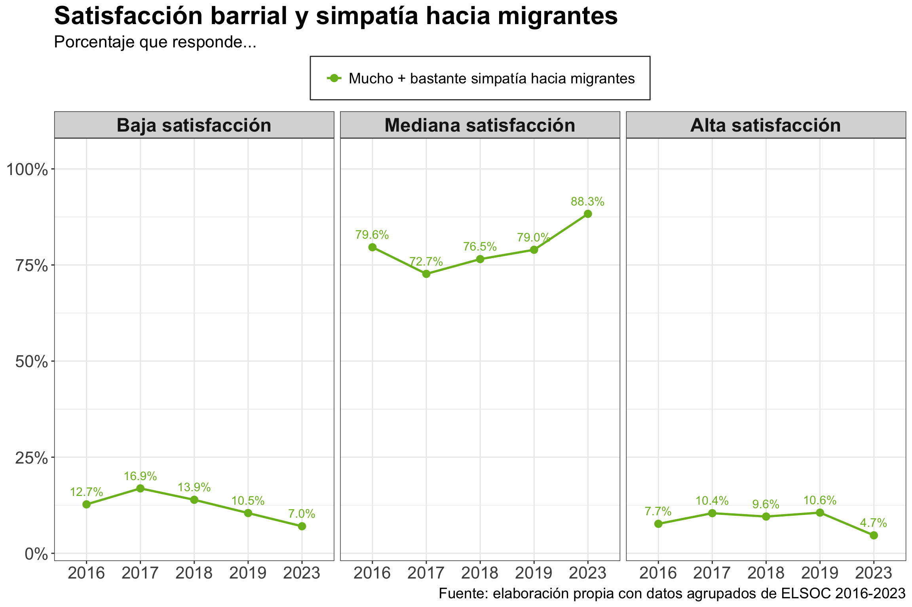
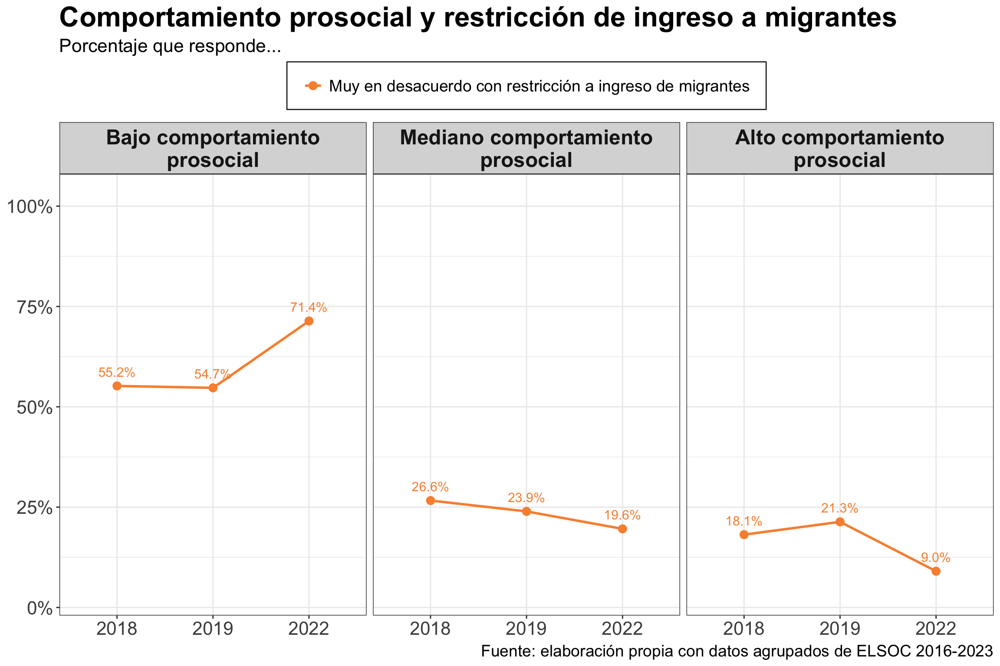
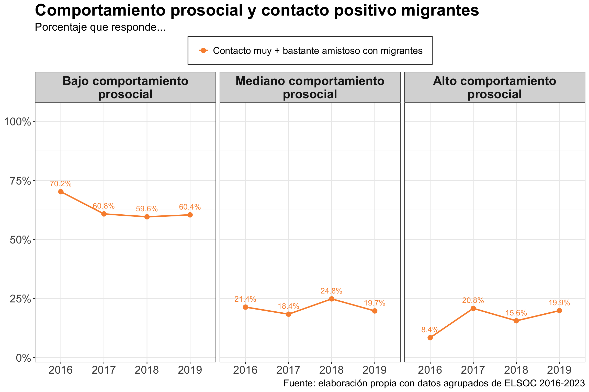
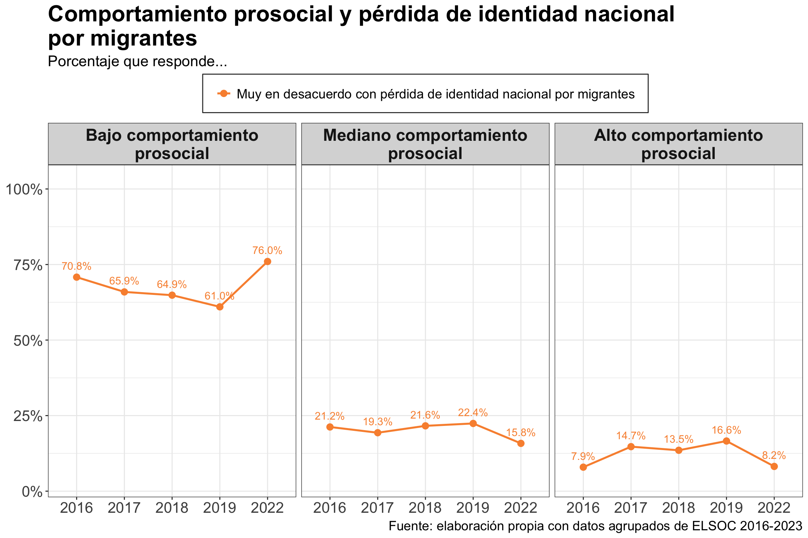

Cohesión social y migración:
Una década de cambios y desafíos
Roberto González1,2
1Centro de Estudios de Conflicto y Cohesión Social - COES
2Escuela de Psicología, Pontificia Universidad Católica de Chile
Segundo Foro de Cohesión Social - COES/CEP
Santiago, 9 Septiembre 2025
Contenidos
1. Contexto y motivación
2. Radiografía de actitudes hacia la migración
3. Cohesión social y migración
4. Conclusiones
1. Contexto y motivación
¿Qué es la cohesión social?
Se relaciona con la cantidad y calidad de los vínculos existentes en una sociedad
Múltiples dimensiones, que se pueden agrupar en dos grandes grupos (Chan et al., 2006):
Cohesión vertical: vínculos con instituciones y el estado (confianza en instituciones, participación política
Cohesión horizontal: vínculos con grupos, confianza interpersonal, redes de apoyo y seguridad.
Esta presentación se centra en la relación entre la dimensión horizontal de la cohesión social y la migración.
Migración en Chile
Crecimiento acelerado y cambio en la composición migratoria: De acuerdo con las cifras del último CENSO (INE, 2024) la población extranjera en Chile alcanzó 1,6 millones de personas (8,8% del total), duplicando la cifra del censo 2017.
Percepciones ambivalentes y polarización:
- Migrantes son vistos como trabajadores, pero también asociados a delincuencia.
- En zonas de mayor exposición surgen percepciones más negativas, en línea con la tesis de hostilidad inicial ante diversidad (Paolini et al., 2014).
Impacto social y tensiones en la cohesión: El aumento abrupto de la migración ha desafiado los marcos institucionales y generado tensiones en la cohesión social (Dinesen et al., 2020; Reibold et al., 2025),en particular a nivel de los vínculos sociales (cohesión horizontal).
Investigando la cohesión social
El Observatorio de Cohesión Social (OCS) es un proyecto enmarcado en el FONDAP° 1523A0005: Centro de Estudios de Conflicto y Cohesión Social
Surge el año 2020 con el objetivo de contribuir al análisis de la cohesión social en Chile y América latina
Se basa en la experiencia de proyectos internacionales de conceptualización y medición de cohesión social
El Estudio Longitudinal Social de Chile es un panel representativo desde el 2016 que busca analizar cómo piensan, sienten y se comportan las personas con respecto al conflicto y la cohesión social en Chile
Tiene un diseño muestral complejo: probabilístico, por conglomerados, multietápico y estratificado según el tamaño de las ciudades
Contiene baterías que tematizan el vínculo en sociedad que permiten medir y analizar las dimensiones de la cohesión social
Medición de cohesión social horizontal con ELSOC

2. Aceptación de la diversidad e interculturalidad
Aceptación de la diversidad
Es la actitud hacia personas de diferentes orígenes y culturas dentro de una sociedad. Se mide evaluando los siguientes aspectos:
Simpatía hacia migrantes — “¿Cuánto le agradan los [peruanos/haitianos/venezolanos] que viven en Chile?”
Amenaza laboral — “Con la llegada de tantos […], en Chile está aumentando el desempleo.”
Pérdida de identidad nacional — “Con la llegada de tantos […], Chile está perdiendo su identidad.”
Calidad del contacto — “En los últimos 12 meses, cuando interactuó con […], ¿cuán amistosa fue la experiencia?”
Políticas más restrictivas — “Chile debería tomar medidas más drásticas para impedir el ingreso de inmigrantes al país.”


3. Cohesión social horizontal y migración
3.1. Seguridad
3.2. Vínculos territoriales
3.3. Redes
3. Cohesión social horizontal y migración
3.1. Seguridad
3.2. Vínculos territoriales
3.3. Redes


3. Cohesión social horizontal y migración
3.1. Seguridad
3.2. Vínculos territoriales
3.3. Redes



3. Cohesión social horizontal y migración
3.1. Seguridad
3.2. Vínculos territoriales
3.3. Redes



4. Conclusiones
Conclusiones
1. :
2. :
3. :
¡Gracias por su atención!
Referencias
Chan, J., To, H.-P., & Chan, E. (2006). Reconsidering Social Cohesion: Developing a Definition and Analytical Framework for Empirical Research. Social Indicators Research, 75(2), 273-302. https://doi.org/10.1007/s11205-005-2118-1
Dinesen, P. T., Schaeffer, M., & Sønderskov, K. M. (2020). Ethnic Diversity and Social Trust: A Narrative and Meta-Analytical Review. Annual Review of Political Science, 23(1), 441-465. https://doi.org/10.1146/annurev-polisci-052918-020708
INE. (2024). Resultados Fecundidad, Migración Interna e Internacional CENSO 2024.
Paolini, S., Harwood, J., Rubin, M., Husnu, S., Joyce, N., & Hewstone, M. (2014). Positive and Extensive Intergroup Contact in the Past Buffers against the Disproportionate Impact of Negative Contact in the Present. European Journal of Social Psychology, 44(6), 548-562. https://doi.org/10.1002/ejsp.2029
Reibold, K., Bachvarova, M., & Lenard, P. T. (2025). Introduction: Trust, Social Cohesion, and Integration. Critical Review of International Social and Political Philosophy, 1-18. https://doi.org/10.1080/13698230.2025.2528379